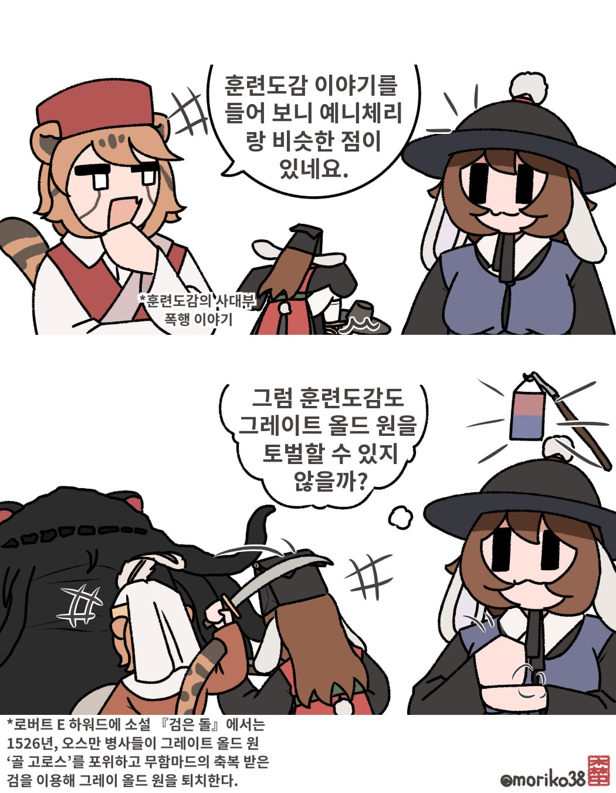
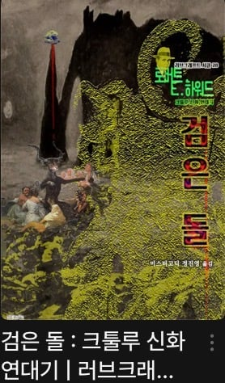

로버트 E 하워드 (대표작: 코난 더 바바리암)의 소설 The black stone에는 오스만의 병사들이
그레이트 올드 원 골 고로스를 퇴치하는 이야기가 나온다.
오스만의 병사들은 겁에 질린 상태에서도 골 고로스를 포위하고 무함마드로 부터 축복 받은 검과, 불, 그리고 오래전 부터 전해진 주문으로 그것을 죽였다.
그러나 골 고로스는 죽어가는 와중 공격자의 절반을 살해하였다.
외국인들이 훈련도감 이야기를 보고 예니체리가 생각난다길래 그려본 만화

나무위키 외에 확인되는 자료가 없어서 직접 사서 확인 해봄
연재 화이팅